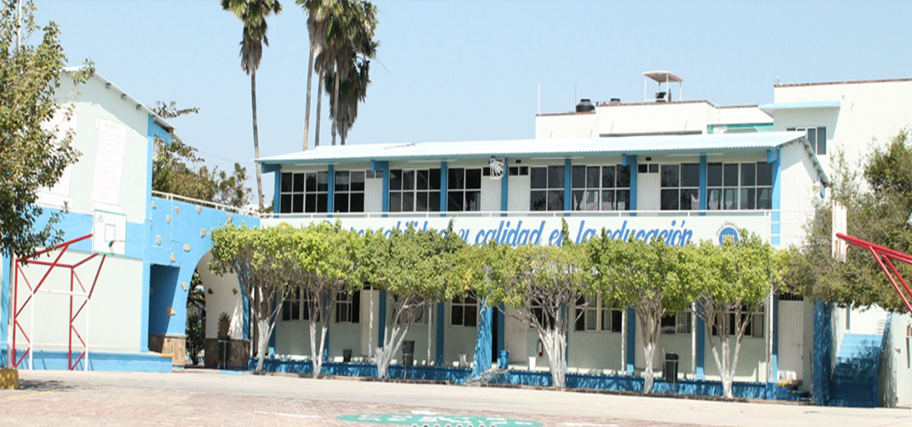
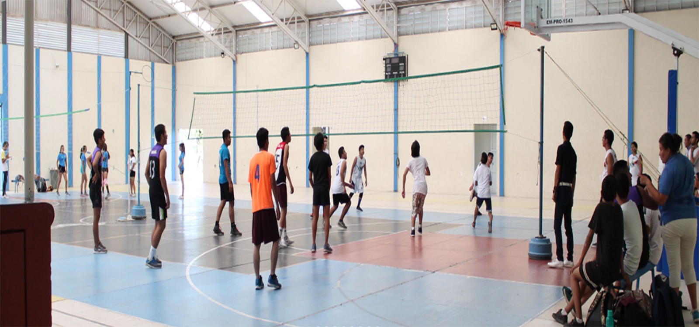

-

- 
- 
El INSTITUTO DE ESTUDIOS SUPERIORES DEL ISTMO DE TEHUANTEPEC da la más cordial bienvenida a su página. Esta Institución nace en agosto de 2004, con la finalidad de proporcionar a los jóvenes de la región una oferta educativa de calidad con carreras pertinentes y con planes de estudios innovadores que permitan a los profesionales que se forman, egresar con un perfil de excelencia que les permita incrustarse con facilidad en el mundo globalizado. Contamos con instalaciones creadas específicamente como espacios educativos, aulas cómodas y equipadas, laboratorios de cómputo, biblioteca virtual, cafetería, sala audiovisual, instalaciones deportivas propias, en fin, un sinnúmero de espacios que hacen más grata y cómoda la estancia del estudiante durante su formación profesional. Además de que logramos consolidar una planta de profesores calificados y con experiencia, de manera permanente reciben cursos de capacitación docente, y se caracterizan por ser altamente responsables y día a día muestran su compromiso con los estudiantes. El mayor interés de la Comunidad IESIT, es servir a todos los alumnos que optan por esta institución a desarrollarse como profesionistas comprometidos con el conocimiento y el cambio constante que se genera en él, apoyamos su formación como líderes y agentes de cambio social en beneficio de la humanidad. Gracias por visitar esta página, nos dará mucho gusto recibirlos en nuestras instalaciones.
De nuestras licenciaturas

Somos una Institución Educativa superior de excelencia y calidad, orientada a satisfacer las necesidades para el desarrollo social, científico, tecnológico, cultural y humano de la región del Istmo de Tehuantepec y de nuestro país; El INSTITUTO DE ESTUDIOS SUPERIORES DEL ISTMO DE TEHUANTEPEC es promotor de innovación y se encuentra abierto al cambio de su entorno.
Ser una Institución de excelencia académica, en donde prevalezcan los valores científicos y humanos con un gran compromiso de sus profesores, alumnos y egresados para el desarrollo de la región pero sobre todo de nuestra patria.
NUESTRA MISIÓNProporcionar los medios educativos para facilitar la formación de profesionales, líderes de excelencia con un alto sentido de responsabilidad y compromiso con la sociedad para promover el desarrollo de nuestra nación.
Características que nos distinguenProgramas de Estudio actualizados y de alta calidad.
Sólida formación en la generación, aplicación y transmisión de conocimientos.
Profesores altamente calificados.
Instrumentos apropiados y confiables para la evaluación del aprendizaje.
Servicios oportunos en la atención individual y de grupo.
Infraestructura moderna y suficiente para apoyar el trabajo académico y el desarrollo integral del futuro profesionista.
Sistema eficiente de gestión y administración.
Servicio Social articulado con los objetivos de los programas educativos.
AQUI PUEDES VER TODAS LAS GALERIAS
NOS ENCONTRAMOS
¡¡¡Somos tu mejor opción en Educación Superior!!!
{kind=link}
{kind=link}
{kind=link}
{kind=link}
{kind=link}
{kind=link}
{kind=link}
{kind=link}
{kind=link}
{kind=link}
{kind=link}